Laporan Praktikum 9: UI Bootstrap dan Templating
Pendahuluan
Praktikum ini bertujuan untuk mempelajari implementasi antarmuka aplikasi menggunakan Laravel UI dan Bootstrap pada studi kasus Sistem Informasi Sekolah. Selain memanfaatkan fitur authentication bawaan Laravel, praktikum ini juga membahas proses kustomisasi tabel users, penggunaan template SB Admin 2, penerapan Blade Templating, pembuatan layout global, hingga implementasi fitur CRUD untuk manajemen pengguna.
Repository GithubLangkah Kerja
Pertama kita buat project laravel baru dengan perintah
create project laravel/laravel laravel-sisfo
--prefer-dist. Maka akan keluar output berikut. setelah itu kita jalankan
saja porject dengan perintah php artisan serve.
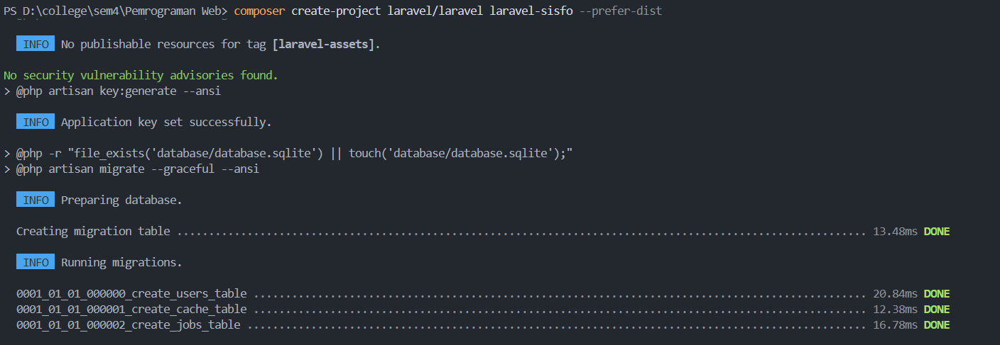
Pertama kita check dan samakan detail pada file .env dengan
database yang kita gunakan, disini kita menggunakan mysql
dengan nama database laravel-sisfo. Setelah itu kita install
package laravel/ui dengan perintah
composer require laravel/ui. Setelah itu kita
jalankan perintah untuk generate auth scaffolding dengan
perintah php artisan ui bootstrap --auth.
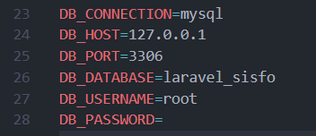
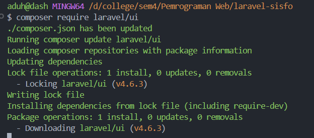
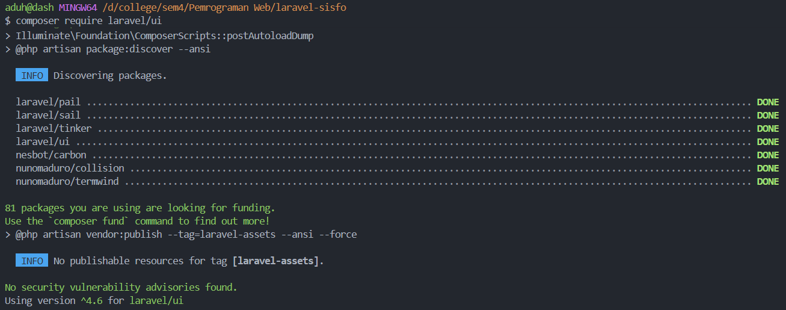
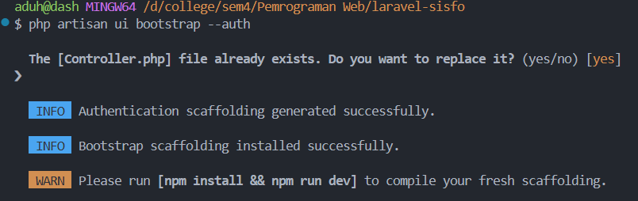
Selanjutnya kita jalankan migration untuk membuat tabel users,
dengan perintah
php artisan migrate. Maka akan keluar output
berikut.
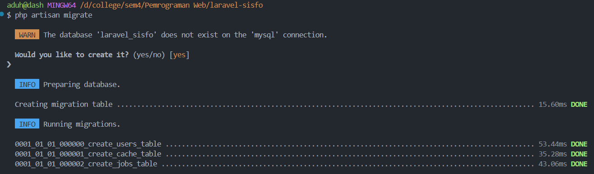
Kita sudah dapat mengakses halaman register, dashboard, dan login. Dan tampilannya sudah seperti berikut
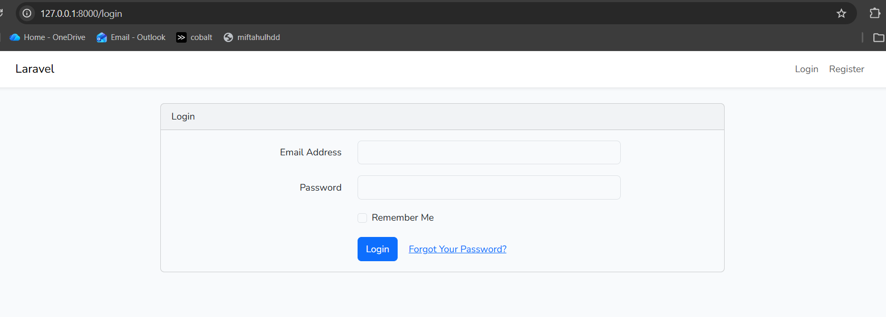
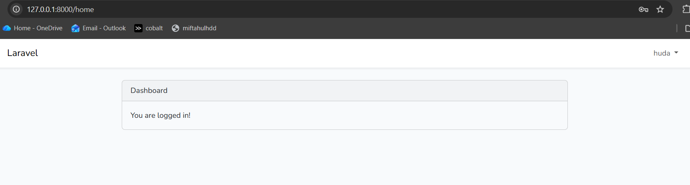
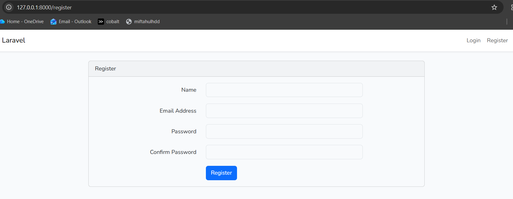
Dari sturktur tabel user kita perlu menambahkan beberapa
field, maka perlu membuat migration baru dengan perintah
php artisan make:migration custom_table_user.
Setelah itu kita edit file yang baru saja dibuat tersebut
seperti gambar dibawah.
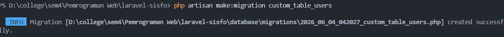
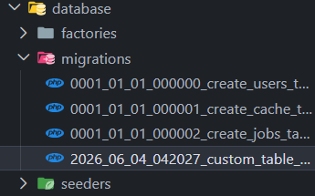
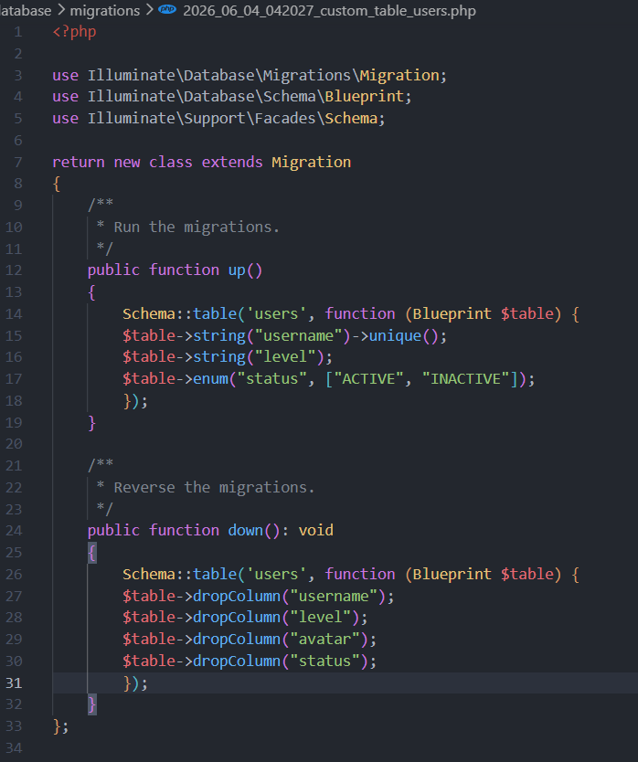
Jalankan perintah php artisan migrate untuk
menjalankan migration dan membuat field baru pada tabel user
di database. Maka akan keluar output berikut.
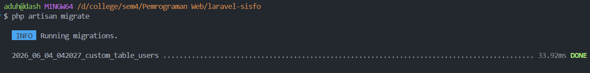
Setelah berhasil melakukan costum table users selanjutnya
membuat user menggunakan fitur seeding pada Laravel, buat
seeder dengan nama AdminSeeder dengan perintah
php artisan make:seeder AdminSeeder maka secara
otomatis file AdminSeeder.php akan dibuat pada folder
database/Seeder. Kemudian buka file tersebut dan buat akun
admin seperti kode program berikut. Lalu edit fungsi run()
pada file AdminSeeder seperti pada gambar dibawah.
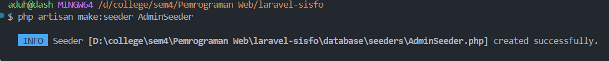
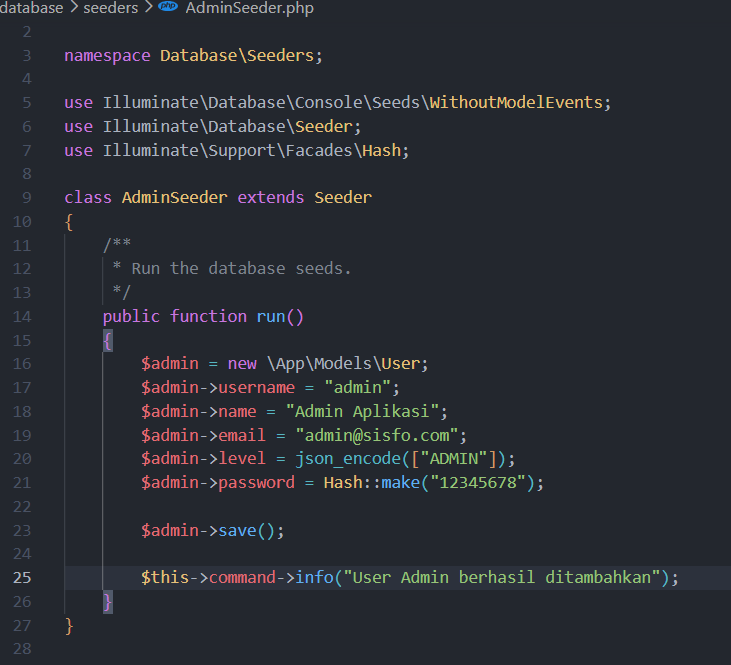
Selanjutnya, untuk menjalankan seeding, kita jalankan perintah
php artisan db:seed --class=AdminSeeder dan jika
berhasil maka akan keluar output berikut.
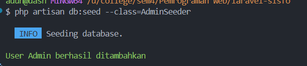
Jika sudah selesai menjalankan seeder, maka kita sudah dapat login menggunakan akun admin yg dibuat tadi.
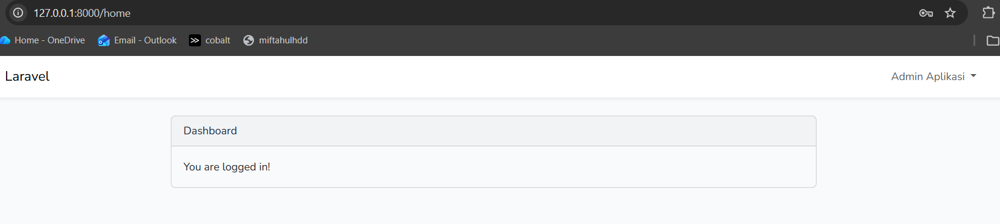
Setelah proses autentikasi Laravel berhasil menggenerasi tampilan dashboard bawaan, langkah berikutnya adalah mengonfigurasi antarmuka aplikasi agar sesuai dengan template pilihan. Pada studi kasus ini, kita akan menggunakan template SB Admin 2 yang berbasis framework Bootstrap. Setelah di download melalui link https://startbootstrap.com/theme/sb-admin-2 lalu diekstrak file-nya. Selanjutnya, kita buat folder baru bernama sbadmin di dalam direktori public proyek Laravel kita, kemudian copy-paste seluruh aset template ke dalam folder tersebut.
Selanjutnya kita buat code untuk halaman login di file app.blade.php yang ada dalam folder view/layouts. Menjadi seperti berikut,
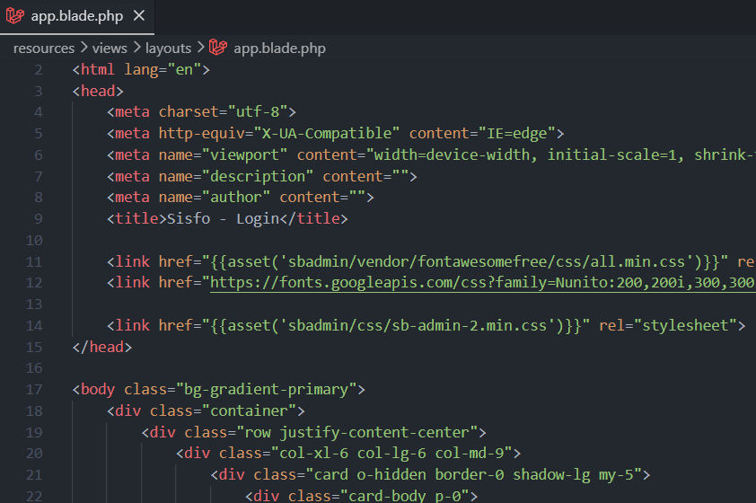
Maka nanti tampilan login kita akan menjadi seperti ini,
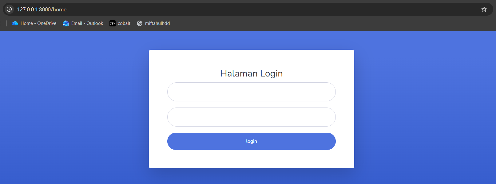
Kita buat view untuk layout utama, index, create.
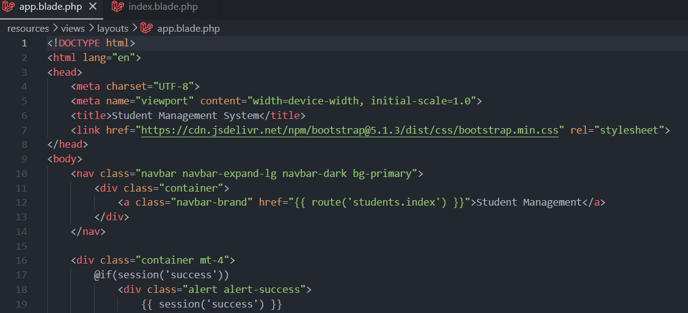
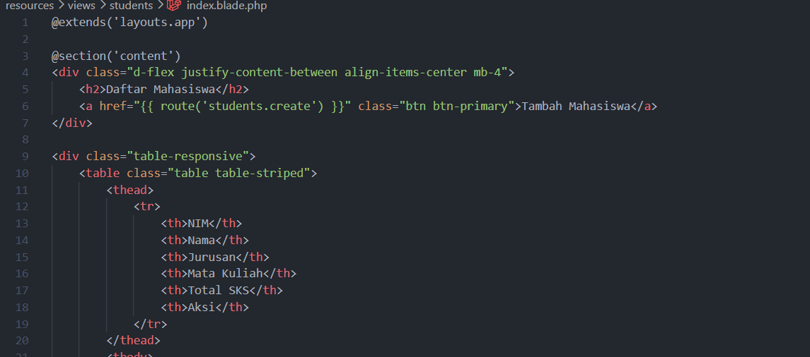
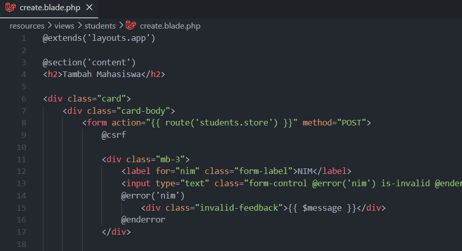
Berikut adalah hasil dari project yang kita buat.
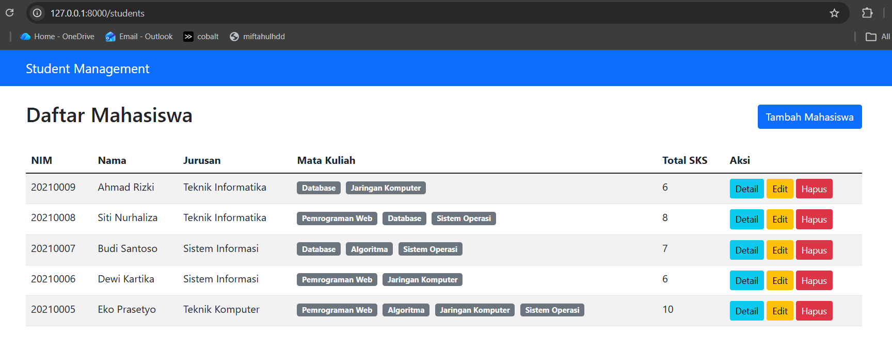
Kita diminta untuk membuat query untuk menampilkan: 1.Semua mahasiswa beserta jurusan dan mata kuliahnya; 2.Jurusan yang memiliki mahasiswa terbanyak; 3.Mata kuliah yang diambil oleh mahasiswa tertentu; 4.Total SKS yang diambil setiap mahasiswa. Disini aku membuat function pada studentcontroller untuk setiap nomor latihan. juga kita buatkan route dan view agar function tersebut dapat diakses melalui url.
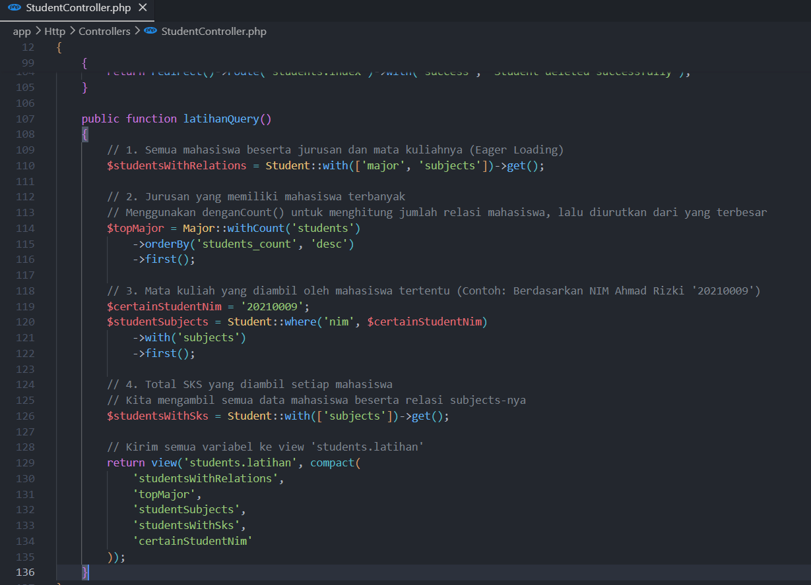
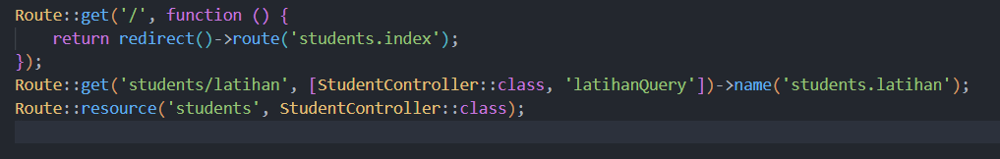
Latihan 1,
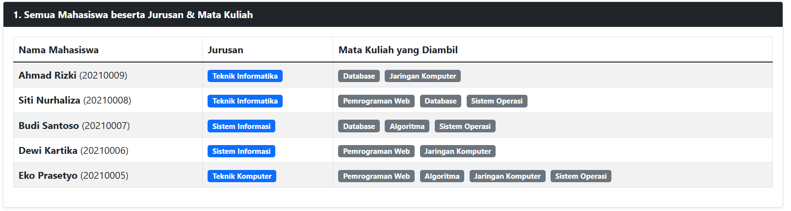
Latihan 2,
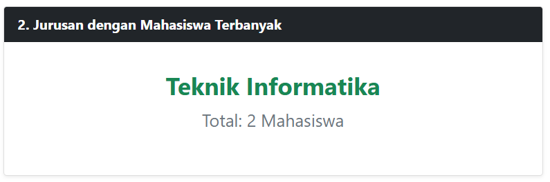
Latihan 3,
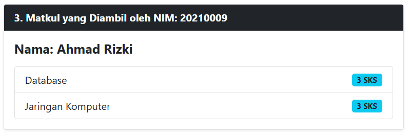
Latihan 4,
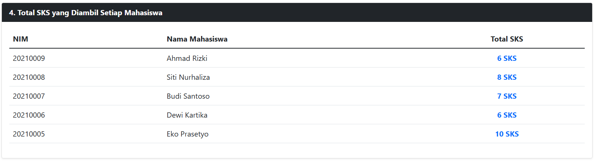